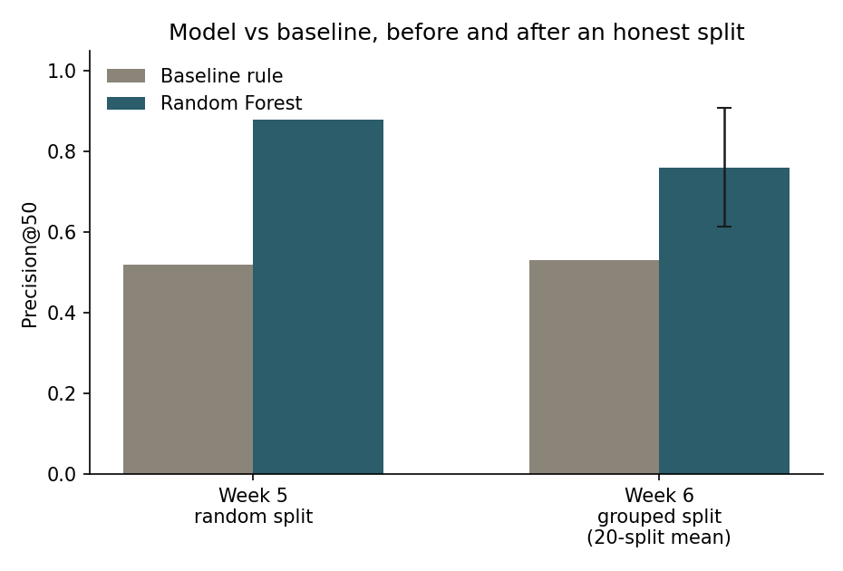
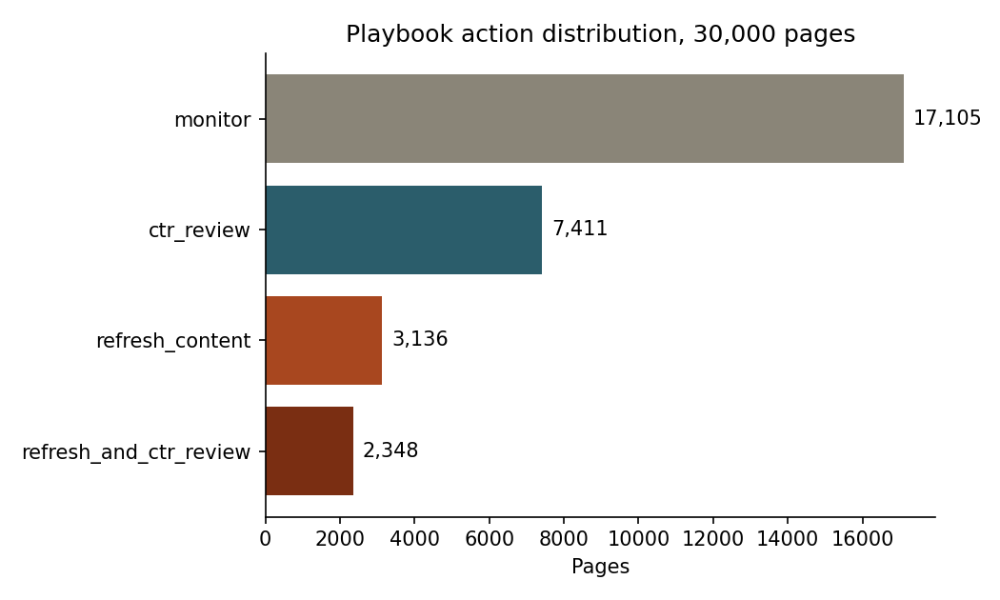

Refresh or Wait: Scoring Content Decline Risk Across 30,000 Pages
Which pages should a content team look at first when they can only review a handful this week? This paper scores 30,000 pages for decline risk using a Random Forest classifier trained on observable 90-day performance and content signals, validated against a hand-written CTR-gap baseline and against the dataset's own base rate. A plain random train/test split suggested a large model advantage, Precision@50 of 0.88 against a 54.2% base rate, but a client-grouped split, the honest test for a model meant to generalize to pages it hasn't seen, cut that advantage to a measured 0.761 with real variance across which clients land in the test set. The hand-written baseline, it turns out, performs at or slightly below the base rate on this specific metric, so the model's real, defensible advantage is its lift over base rate, +0.219 on average under the honest split, smaller than the first number implied, and reported here with its uncertainty attached.
Introduction
A content team maintaining thousands of pages cannot manually review all of them every week. Some pages are declining in visibility and worth a look, others sit at a strong position but under-capture the clicks that position should earn, and most pages need no action at all this cycle. The decision this project supports is narrow and practical: given limited review time, which pages go on this week's list, and why.
That's a ranking and prioritization problem sitting on top of a classification problem. Before any page can be ranked, there needs to be an honest, checkable answer to a simpler question, is this specific page currently declining. Everything in this paper follows from taking that simpler question seriously, defining the label carefully, checking it for leakage, and only then building the ranked list on top of it.
Data
This project uses content_refresh_anonymized.csv, a 30,000-page anonymized slice
drawn from the FlyRank ML Internship warehouse release. Each row is one page. Client and page
identifiers are pseudonymized hashes throughout this paper and the underlying repository, no
client names, domains, URLs, or private queries appear anywhere in this project.
What was excluded, and why
impressions_last_30d, impressions_prev_30d, clicks_last_30d,
clicks_prev_30d, sessions_last_30d, sessions_prev_30d, and
trend_pct were all excluded from the feature set. These columns are either the label
itself or the exact two time windows the label is computed from. Including them would mean the
model partly reads the answer directly off the input, a mistake deliberately reproduced and caught
in an earlier leakage exercise on this same dataset before this paper's modeling began.
Search volume, competition, and CPC are missing for 2,468 rows; word count and character count are missing for 7,699 rows, likely pages without keyword data or a captured text body. These were filled with the column median rather than zero, since zero would misrepresent an unknown value as a true absence of content or demand.
Methodology
Label
is_declining, defined as trend_direction == "down", an observed
comparison between two real 30-day windows already present in the data export, not a threshold
invented after the fact.
Baseline
A hand-written rule, low_ctr_visible_page: pages with at least 500 impressions in
90 days, a position between 1 and 20, and a click-through rate under 0.5. The rule's ranking score
is the gap between a page's CTR and its position tier's average CTR, multiplied by impression
volume, an estimate of clicks left on the table. This baseline was validated on its own terms
before any model was built, average CTR falls cleanly as position tier weakens across the full
dataset, confirming the assumption the rule depends on.
Model
A Random Forest classifier predicting is_declining from 22 numeric and 9 categorical
features, 90-day performance aggregates, content metadata, and tier columns. Random Forest was
chosen over Logistic Regression because the underlying signals interact, staleness, demand,
position, and content depth trade off against each other in ways a flat, additive rule or a
linear model can't fully express.
Validation design
Two passes, deliberately, not one. The first pass used a plain stratified random 75/25 split. Because many pages in this dataset share a client, a random split can place pages from the same client on both sides of the split, letting the model partly learn account-level patterns rather than a generalizable content signal. The second pass used a client-grouped split, every page from a given client entirely in train or entirely in test, repeated across 20 different client groupings to check how stable the result actually is with only 32 clients available.
Leakage check
Correlation between each candidate feature and the label topped out at 0.19
(days_with_impressions), far below what a genuine leak would produce. The excluded
columns above were confirmed as the right exclusions, not an arbitrary or overly cautious cut.
Results
Precision@50 is the primary metric throughout this paper: of the top 50 pages a ranking surfaces, what fraction are genuinely declining. A content team works through a short list, not all 30,000 pages, so the top of the ranking is what actually matters to the decision being supported.

| Split | Base rate | Baseline P@50 | Model P@50 |
|---|---|---|---|
| Random (single split) | 0.542 | 0.520 | 0.880 |
| Client-grouped (20-split mean) | 0.542 | 0.531 | 0.761 ± 0.147 |
The baseline's Precision@50 sits at or slightly below the dataset's base rate, 54.2% of pages are declining, so a ranking with no real skill would already score close to this on the metric. The baseline shows effectively no measurable lift for predicting decline specifically, -0.022 on the random split, -0.011 on the grouped mean. That's expected, the rule was built to catch CTR opportunities, not decline, but it means the model's real comparison point is the base rate, not just the baseline. Measured against that, the model's lift is +0.338 on the random split and +0.219 on the honest client-grouped split, still a real, measured advantage, reported plainly rather than against a baseline that turned out not to be much of a competitor here.
The random split's 0.88 was an optimistic estimate. Under a client-grouped split, the honest test of whether this model generalizes to a client it hasn't seen, the model's measured advantage narrows to 0.761 on average, with a standard deviation of 0.147 across which clients happen to land in the test set. The model still clearly beats the baseline on average, that conclusion holds, but the random split's number should not be quoted on its own.
Limitations & honest framing
- Only 32 clients in this slice, ranging from 3 pages to over 7,000, so any client-grouped estimate carries real variance, reported as a mean and standard deviation across 20 splits rather than a single number.
- The label describes a current-snapshot comparison, not a checked future outcome. A page marked declining has a negative trend right now; this is not a guarantee it continues declining.
- Nothing in this paper establishes why a page declines. The model finds pages whose observable profile resembles other pages that were seen to decline in this sample, an association, not a causal mechanism.
- This project makes no claim about Google's ranking algorithm or any causal effect of a refresh action. All claims use observed, measured, or directional language.
Ranked recommendations
Every page in the dataset receives one of four actions, combining the model's decline probability with the CTR-gap baseline rather than replacing one with the other.

Top 10 by priority score
| Priority | Reason code | Action | Decline prob. | Position | |
|---|---|---|---|---|---|
| 1 | 0.906 | declining_and_ctr_gap | refresh_and_ctr_review | 0.86 | 2.7 |
| 2 | 0.890 | declining_and_ctr_gap | refresh_and_ctr_review | 0.84 | 3.0 |
| 3 | 0.887 | declining_and_ctr_gap | refresh_and_ctr_review | 0.84 | 2.9 |
| 4 | 0.887 | declining_and_ctr_gap | refresh_and_ctr_review | 0.84 | 8.1 |
| 5 | 0.884 | declining_and_ctr_gap | refresh_and_ctr_review | 0.83 | 10.4 |
| 6 | 0.881 | declining_and_ctr_gap | refresh_and_ctr_review | 0.83 | 2.7 |
| 7 | 0.881 | declining_and_ctr_gap | refresh_and_ctr_review | 0.83 | 14.7 |
| 8 | 0.881 | declining_and_ctr_gap | refresh_and_ctr_review | 0.83 | 2.8 |
| 9 | 0.880 | declining_and_ctr_gap | refresh_and_ctr_review | 0.83 | 14.5 |
| 10 | 0.880 | declining_and_ctr_gap | refresh_and_ctr_review | 0.83 | 18.2 |
All ten of the top-ranked pages belong to a single pseudonymized client. That's a real pattern in this dataset, not an error, this client appears to have a batch of pages sharing a strong decline-plus-CTR-gap profile, but it means the top of this specific queue is not a diverse cross-client sample, and a real rollout would want a per-client cap so one account doesn't crowd out every other client's list.
Human review and no-go cases
- No automated title, meta, or content rewrites triggered directly by a priority score.
- No automated depublishing, redirecting, or de-indexing under any circumstance.
- No cross-client comparison or ranking, client sample sizes here range from 3 to over 7,000 pages, too different to compare meaningfully.
- No claim that this model predicts what will happen to a specific page. The honest claim is that a page resembles others observed to decline.
Monitoring
Retrain if a new client's page count would meaningfully shift the 32-client base, if the model-to-baseline gap narrows toward the baseline's own mean on a rolling basis, or if more than three months pass since the last multi-split grouped re-evaluation.
Reproducibility
Every number in this paper traces back to a committed, executed notebook in the project repository.
Acknowledgments & data credit
Built on the FlyRank ML Internship dataset. Learn more at flyrank.ai.